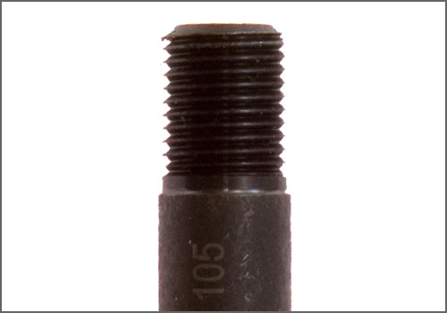
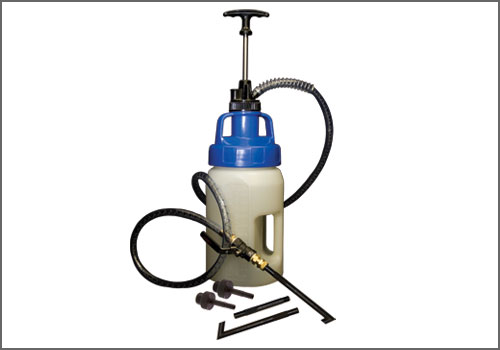
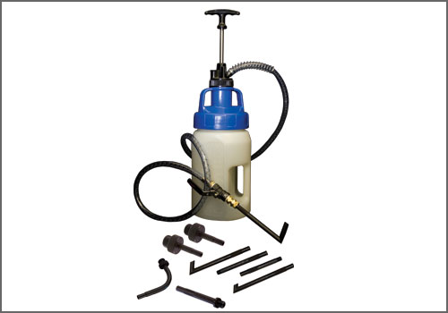
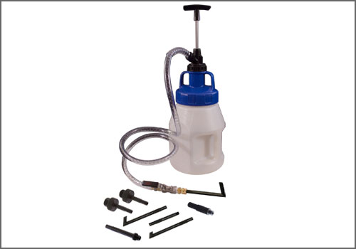

VW/Audi ATF Adapter - AST Tool # ATF 105
VW/Audi ATF Adapter
AST tool# ATF 105


10mm x 1.0 Transmission adapter used on Mini Coopers with AISIN Transmission and VW/Audi. Used in conjunction with the ATF Filler System. Individual adapter included (does not include pump, container, hose, or shut-off valve). For the complete VW/Audi Kit, see tool# ATF 1033 VW or ATF 1033-5 VW. For the complete ATF Filler Pump Set, see tool# ATF 1100-5.
- 10mm x 1.0 Transmission adapter used on Mini Coopers with AISIN Transmission and VW/Audi.
- Comparable to VW tool # VAS 6262/2
- Steel Construction
Contact AST for pricing.
Assenmacher Specialty Tools
1-800-525-2943
This Tool is also available in the following kits:

ATF 1033 VW - VW/Audi Drive Line Filler

ATF 1033-5 VW - VW/Audi Drive Line Filler

ATF 1100-5 - 9pc Drive Line Filler System

ATF 1008-5 EURO - Euro Drive Line Filler